Iwamizawa
Iwamizawa · Hokkaido
Iwamizawa
Highlighted on the Hokkaido map.
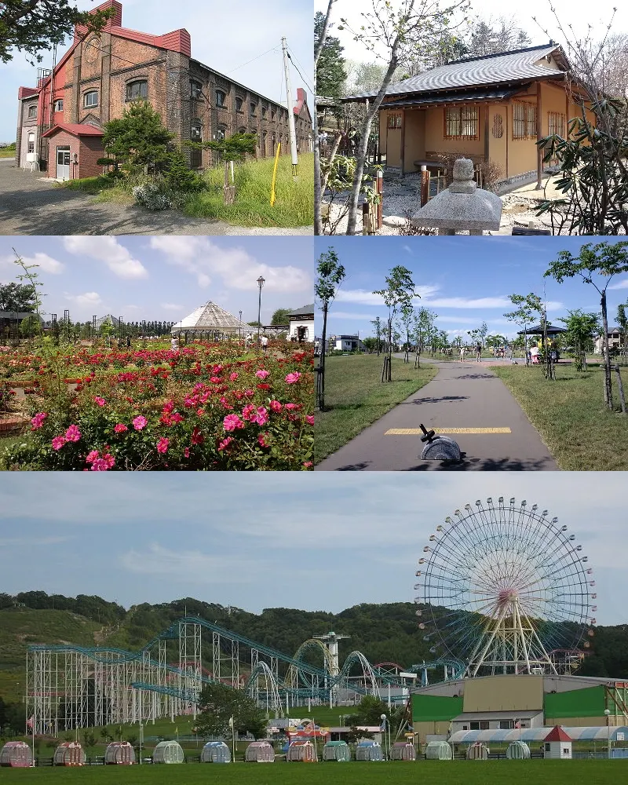
Stay
ホテルサンプラザ
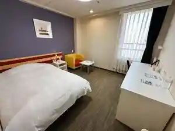
Hoterusanpuraza
岩見沢ホテル５条
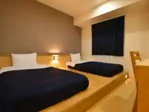
Iwamizawa Hoteru 5 Jou
IWAMIZAWA雪の宿
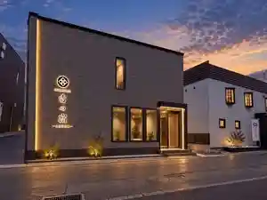
Iwamizawa Yuki No Yado
岩見沢ホテル４条
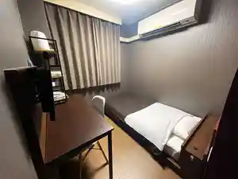
Iwamizawa Hoteru 4 Jou
ゲストハウス はなれや
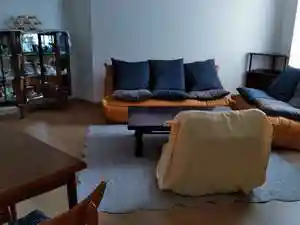
Gesutohausu Hanareya
北村温泉ホテル
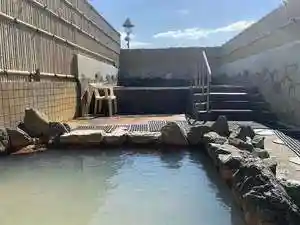
Kitamura Onsen Hoteru
ログホテル メープルロッジ
Roguhoteru Meepururojji
Dining
鈴木健設 カレー部
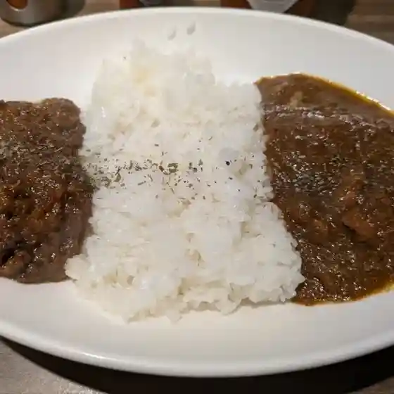
Suzuki Takeshi Setsu Karee Bu
酒彩ひ田まり
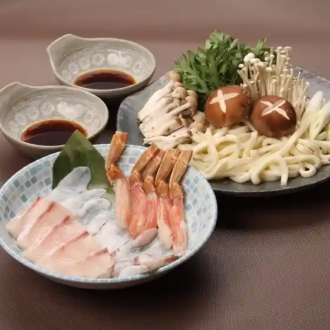
Sake Sai Hi Ta Mari
千年の宴 岩見沢3条西2丁目店
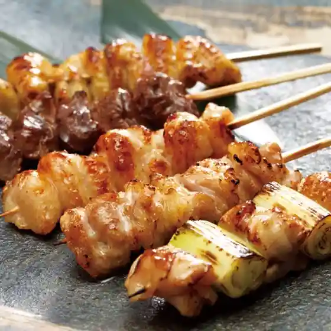
Sennen No Utage Iwamizawa 3 Jousai 2 Choume Mise
和牛炭火焼肉 ほまれ
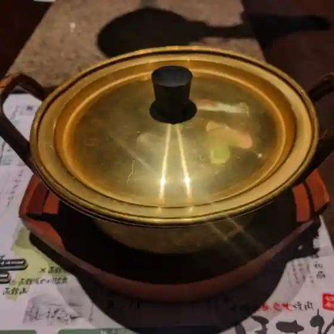
Wagyuu Sumibi Yakiniku Homare
やきとり ももんが
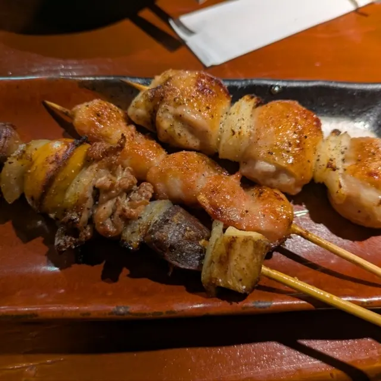
Yakitori Momonga
炭火居酒屋 炎 岩見沢店

Sumibi Izakaya Honoo Iwamizawa Mise
牛角 岩見沢店

Gyuukaku Iwamizawa Mise
イオン 岩見沢店
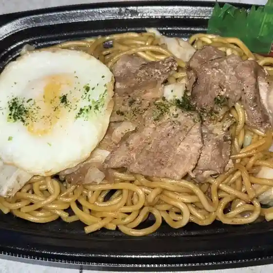
Ion Iwamizawa Mise
ばぐぅす屋
Baguusu Ya
稚内 花いちもんめ 岩見沢店
Wakkanai Hana Ichimonme Iwamizawa Mise
T's Bar
T'S Bar
ミート清水
Miito Shimizu
金作屋
Kinsaku Ya
東のパン家クレヨン
Higashi No Pan Ie Kureyon
福家CAFE
Fukuya Cafe
Wine & Dine Rinto
Wine & Dine Rinto
西山酒店
Nishiyama Saketen
宝水ワイナリー
Housui Wainarii
ファミリーマート 岩見沢4条東店
Famiriimaato Iwamizawa 4 Jou Higashi Mise
elm
Elm
平安閣
Heian Kaku
燗恥&美酒 休処 ふみや
Kan Haji & Bishu Kyuu Tokoro Fumiya
トヨヒコ コープさっぽろ岩見沢南店
Toyohiko Koopu Sapporo Iwamizawa Minami Mise
鮨 伊助
Sushi Isuke